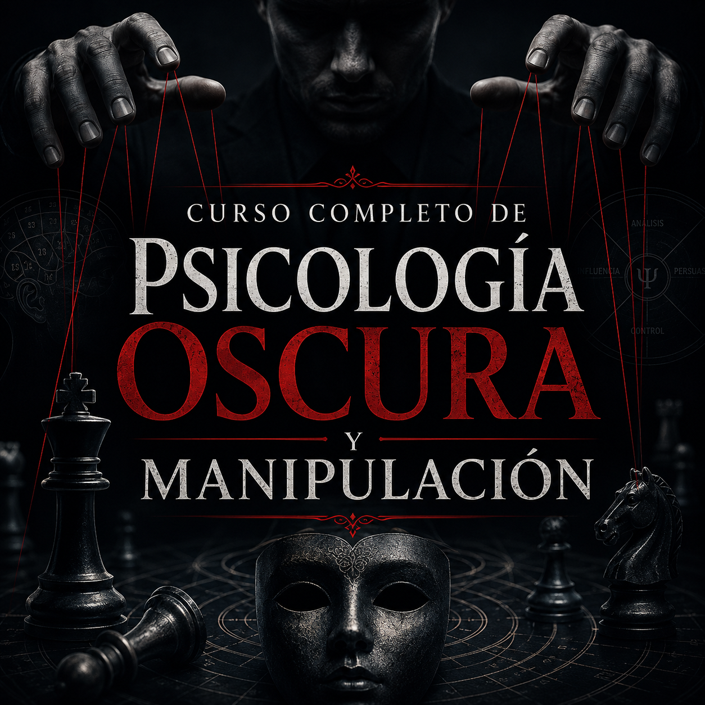
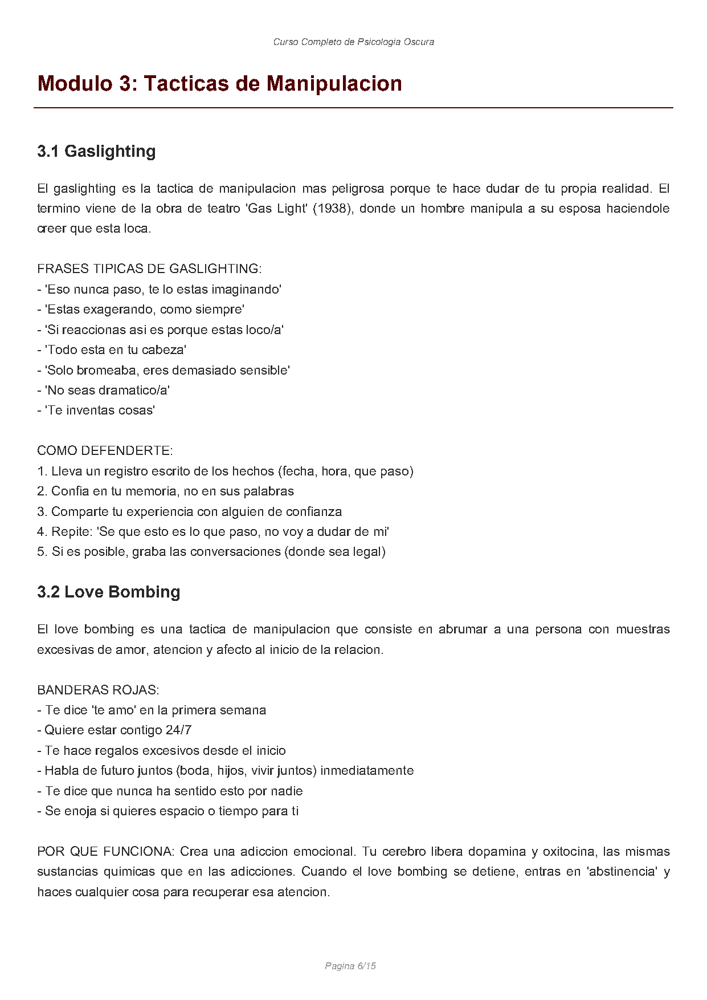
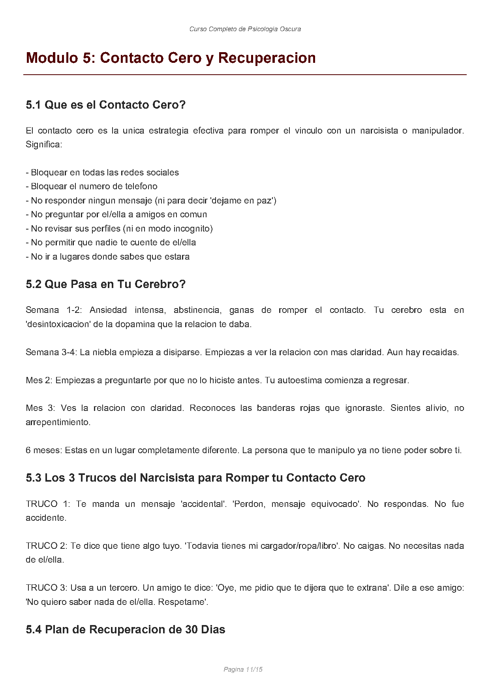
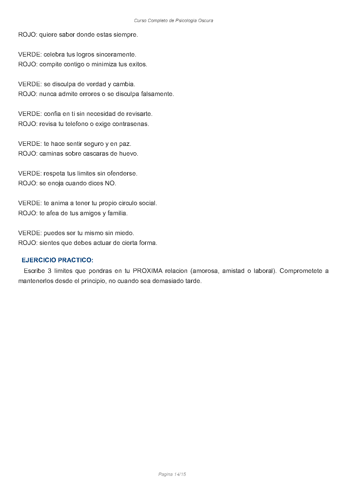

Gaslighting
Detecta cómo te hacen cuestionar lo que viste, escuchaste o sentiste, y aprende qué hacer para conservar claridad mental.
- “Eso nunca pasó.”
- “Estás exagerando.”
- “Todo está en tu cabeza.”
No se trata de adivinar. Se trata de reconocer el patrón.
Un curso directo y accionable para identificar tácticas como gaslighting, love bombing, triangulación y ley del hielo, poner límites con claridad y recuperar tu centro.

Lo que parece amor a veces es control
El curso traduce patrones complejos en señales concretas y respuestas simples, para que dejes de dudar de tu memoria, tu intuición y tus límites.
Detecta cómo te hacen cuestionar lo que viste, escuchaste o sentiste, y aprende qué hacer para conservar claridad mental.
Entiende por qué la intensidad inicial puede convertirse en dependencia emocional y cómo reconocer las banderas rojas a tiempo.
Diferencia entre pedir espacio y castigar con silencio, para dejar de perseguir atención y recuperar poder de decisión.
Programa completo
La estructura va desde los fundamentos de la psicología oscura hasta el contacto cero, la reconstrucción de autoestima y la prevención de futuras dinámicas tóxicas.
Cómo opera la manipulación y qué sesgos suele explotar.
Rasgos, ciclo del abuso y tipos de narcisistas.
Gaslighting, love bombing, triangulación, ley del hielo y victimización.
Técnicas para decir no sin culpa y probar si tus límites son respetados.
Qué hacer al cortar el vínculo y cómo sostener el proceso.
Autoestima, señales de relación sana y protección a futuro.
Muestra del contenido
El curso no se queda en teoría abstracta. Presenta frases típicas, banderas rojas, respuestas recomendadas y pasos de recuperación que puedes empezar a aplicar de inmediato.


Recuperación con dirección
El tramo final del curso está pensado para ayudarte a sostener decisiones difíciles, reconstruir autoestima y prevenir que el mismo patrón vuelva con otro nombre.
Bloqueo, distancia y desintoxicación emocional inicial.
Registro de hechos, apoyo de tu red y comienzo del diario.
Vuelta gradual a rutinas, gusto propio y pequeños límites cotidianos.
Nueva claridad, nuevas reglas internas y prevención para el futuro.

Cierre
Si hoy necesitas claridad, lenguaje y herramientas para poner distancia frente a la manipulación, este curso te da una ruta concreta para empezar.
La entrega es digital a través de Hotmart, con acceso inmediato una vez comprás.
Sí. El contenido está enfocado en reconocer tácticas, poner límites y sostener un proceso de recuperación.
No. Está explicado de forma directa, clara y accionable desde cero.